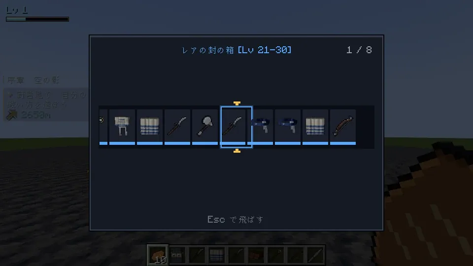
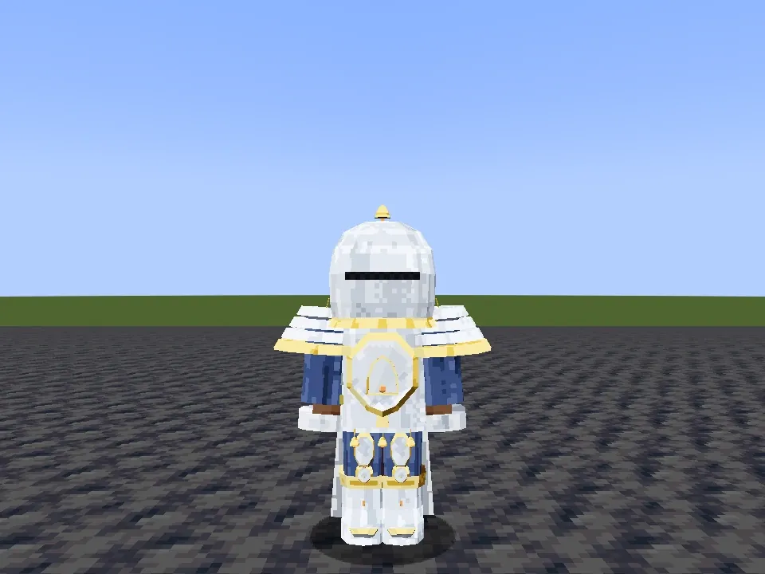
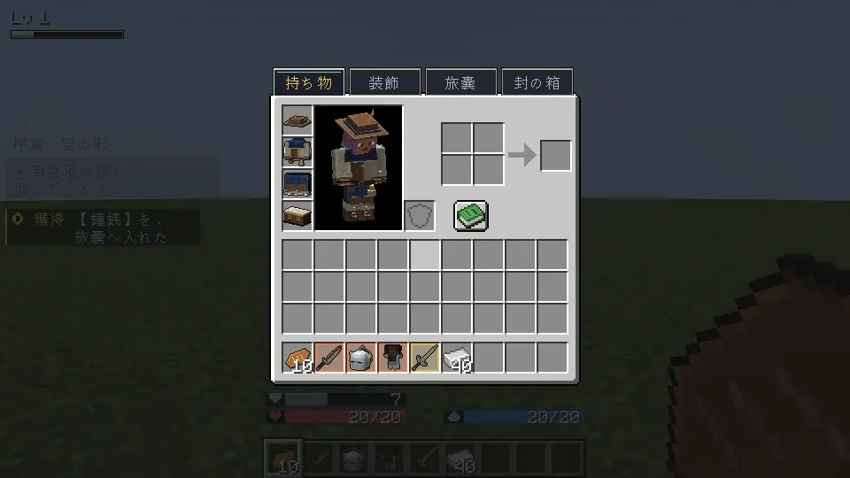

天と淵のあいだ
装備と成長
装備は封印の箱で手に入り、すり減りません。物語を進めるとレベルの上限が上がり、Lv 50 からは転生です。
LOOT
装備の手に入れ方
装備は店・頼みの報酬・敵・巨神から手に入ります。作業台で作ることはありません。

敵やボスが落とす装備は、封印の箱に入っています。町の封切り師に話すと開けてくれます（代金は無料）。同じ箱は重なり、旅嚢には 999 までしまえます。
- 巨神の箱（四体ぶん）、等級とレベル帯ごとの箱、淵の金の箱があります。
- 装備はすり減りません。修理もいりません。
- 装備には必要レベルがあります。足りないと、防具は着られず、武器は力が出ません。
- アクセサリー（護符・護石など）は、持ち物の画面の「アクセサリー」のスロットに付けたときだけ効きます。
TIERS
等級
名前の色と、説明の縁の色で等級が分かります。レア以上の武器と防具には、ランダムな特性が付きます。
| 等級 | 特性の数 | 主な手に入れ方 |
|---|---|---|
| コモン | 0 | 依頼の報酬・店 |
| アンコモン | 0 | 野の敵・店 |
| レア | 1〜2 | 背の敵・中ボス・心臓（巨神の鎧一式） |
| エピック | 1〜2 | 心臓の周回・深淵 |
| ヒロイック | 2〜3 | 心臓・中ボス・初めての選択・交換（ジョブごとの逸品の武器） |
| ★ 伝説 | 2〜3 | 深淵の心臓の周回（転生 3 回から） |
| 神器 | 3 | 終章の巡礼者・あいだの塔 |
MYTHIC
神器
いちばん上の等級です。

- 終章の巡礼者を初めて退けると、自分のジョブの神器が一つ手に入ります。
- 神器はそれぞれ、大きな能力と欠点を一つずつ持っています。
- あいだの塔の箱と塔の店からも、塔の神器が出ます。


FORGE
装備を強くする
- 共鳴の炉（都の鍛冶場）: 強化（+10 まで。+5 と +10 で武器に光の筋が入る）・分解・再鍛造・交換。
- 巨神の粉: 土地の敵が落とす粉を、装備の穴に差します。
- 特性: レア以上の武器と防具に付くランダムな効果。再鍛造で振り直せます。
- 専用の逸品: 巨神の心臓を初めて止めたときに選べる、巨神ごとの品です。
LEVEL
レベルと転生
物語の進みで、レベルの上限が決まっています。推奨より 3 レベルを超えて上だと、倒したときの経験値が減ります。
| 物語の進み | レベルの上限 |
|---|---|
| はじめ | 15 |
| 岩鯨の心臓を止めたあと | 21 |
| 潮殻のあと | 27 |
| 雷翼のあと | 33 |
| 余燼のあと | 40 |
| 深淵の番人を倒したあと | 50 |
| Lv 50 から | 転生（20 回まで） |
Lv 50 からは転生できます。恩恵と称号がもらえ、20 回まで重ねられます。転生 3 回からは、深淵の心臓の周回で ★ 伝説の装備が出ます。
都の四巨神の社（心臓を二つ止めると開く）に、転生の台座があります。
POUCH
旅嚢
この mod の集める品・鍵・笛・素材だけを入れる、専用の持ち物です。

- 拾うと勝手に入り、倒れても残ります。品ごとに決まった枠があります。
- I で開き、Y の長押しで笛などの道具を使います。
- 封印の箱も、旅嚢の「封印の箱」の欄にしまえます。